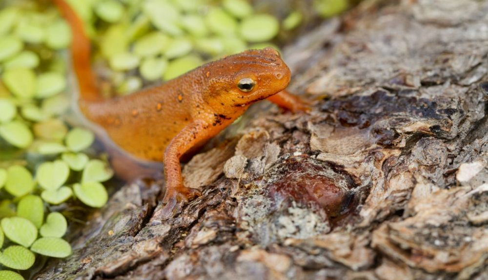

Los tritones son miembros de la familia Salamandridae y hay más de sesenta especies. Todos los tritones son salamandras, pero no todas las salamandras son tritones. Las diferencias entre tritones y salamandras son pocas. Los tritones tienen cuerpos en forma de lagarto con cuatro patas y colas largas. La mayoría tiene la piel suave y humeda, pero tambien pueden tener la piel rugosa y granulada. La mayoría de las especies tiene pulmones bien desarrollados, mientras que algunas conservan branquias y son completamente acuáticas. Los tritones se pueden encontrar en todo el hemisferio norte en América del Norte, Europa, Asia y África del Norte. Algunos viven en tierra, mientras que otros viven casi exclusivamente en el agua. Los tritones pueden regenerar extremidades, órganos y tejidos completamente funcionales, incluido el músculo cardíaco, los componentes de su sistema nervioso y el cristalino del ojo.
CARACTERISTICAS:
- Los tritones pasan la mayor parte de su vida en el agua.
- Pueden regenerar algunas de sus extremidades, organos y tejidos.
- Se alimentan de insectos vivos.
- Puede llegar a vivir hasta 10 años de vida.
- Poseen 3 corazones.
